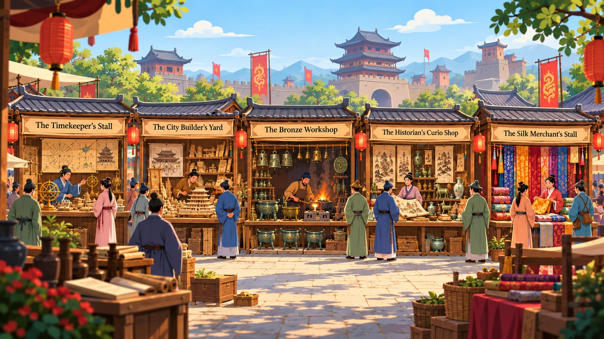
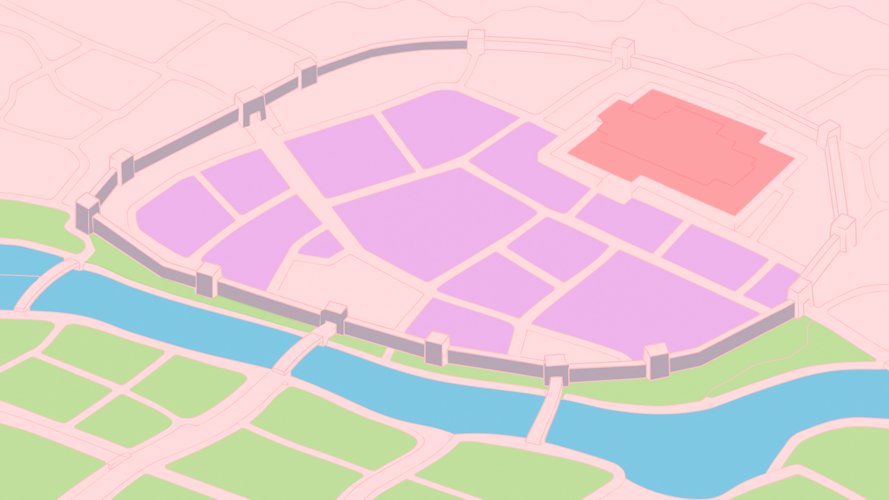
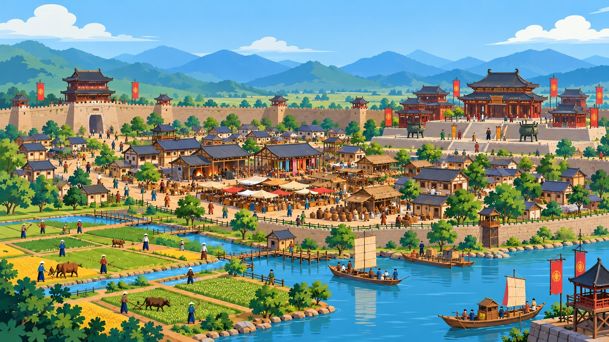
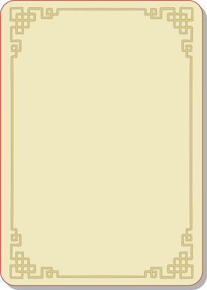
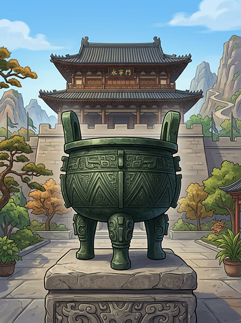

Wonders of Ancient China
b4_wg218_261026_01
Tap the red arrow to step into the market street.
The Timekeeper's Stall
Four dynasties, eighteen hundred years. Drag each dynasty card onto its place on the timeline, then tap to read the fact.
Drag each of the ten parts of the city onto the zone where it belongs.


City edge Riverbank Settlementcentre High ground
The City Builder's Yard
The Bronze Caster's Workshop
Your city had a bronze workshop — step inside. Drag the six casting stages into slots 1 to 6 in order,
and watch the process unfold at every step.

empty workbenchDrag the first step into slot 1 to begin.
Inspect the vessel

A ding — bronze poured into a clay mould, holding food for the ancestors.
The Historian's Curio Shop
The Silk Merchant's Stall
JOURNEY OF THE SILK
Pull the thread and watch it travel. Tap the glowing cocoon, then tap each plaque in turn, from cocoon to loaded cart.
The Silk Merchant's Stall
THE TRADE DESK
Fourteen objects, three directions. Drag each one into its chamber — goes west, traded within China, or arrives from outside.
What does this reveal?
- Two rivers — the Huang He and Yangtze fed villages that became cities by 1600 BCE.
- Our earliest record of China is oracle bones: cracked shells carrying everyone’s
worries, not just the king’s. - Four dynasties — Shang, Zhou, Qin, Han mastered bronze, jade and marble.
- Silk became China’s great export, and the road it travelled took its name.
Think it through
- Which of these would you call China’s greatest achievement and why?
- What would someone three thousand years from now learn about us from the things we leave behind?